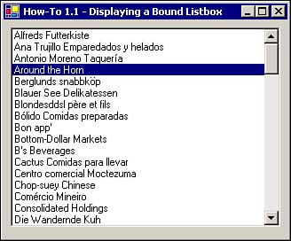
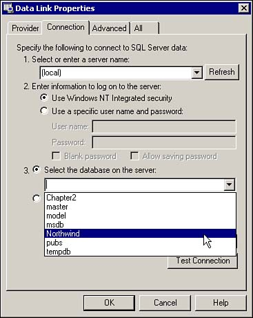
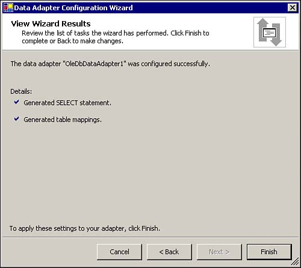
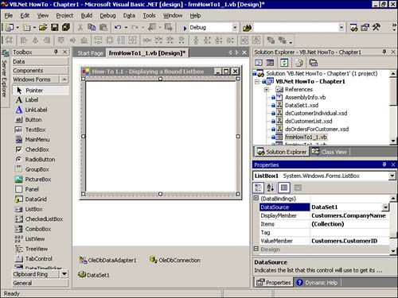
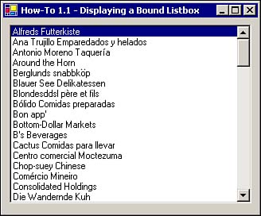

Tip
If you know that the back end that you will be accessing is SQL Server, then use the SQL Server type data controls because they are optimized for it. |
It used to be that when you wanted to create a data entry form, you just assigned a recordset to the data control and allowed the users to scroll through the data, making changes as needed. When you're dealing with Client Server or Web applications, this just doesn't cut it.
One of the first things you need to do is provide a method to limit the amount of data so that users can pick which record they want to edit/view, without pulling all the fields of a table over the Net-either LAN or Internet. List boxes and combo boxes help with that. In this How-To, you will learn how to set up two data controls: OleDbDataAdapter and DataSet. These controls enable you to populate a list box with one line of code.
You want to see a list of customers on your Windows form in a ListBox control. You don't want to write code at this point. You only want to prototype a form, so you just want to use bound data controls. How do you create a list box and bind it using the data controls?
To get started with learning about any of the objects used for data in .NET, it's important to talk about what .NET Namespaces are and how to use them.
The .NET Framework contains a big class library. This class library consists of a number of Namespaces. These Namespaces are made up of various classes that allow us to create our objects. All of the objects and classes that make up the .NET objects, such as forms, controls, and the various data objects, can be found in Namespaces.
Namespaces also can be made up of other Namespaces. For example, there is a Namespace called System.Data. Although this Namespace has classes in it, such as DataSet and DataTable, it also has Namespaces within it called System.Data.OleDb and System.Data.SQLClient, as well as others. To check out the .NET Namespaces, choose Object Browser from the View menu. You can then expand the System.Data Namespace to see the other Namespaces contained within.
If you are positive that the database you are going to be working with is SQL Server, then you would be far better served performance-wise to use the classes found in the System.Data.SQLClient Namespace. However, if you are not sure what database you will be working against, you should use the classes found in System.Data.OleDb.
For this book, I am using objects created from the classes in the System.Data.OleDb Namespace. That way, you can use the routines against other databases with less modifications.
Tip
If you know that the back end that you will be accessing is SQL Server, then use the SQL Server type data controls because they are optimized for it. |
Eight data controls are available for Windows forms. Table 1.1 lists these controls and their uses. You can find these controls by clicking on the Data group in the toolbox.
|
Control Name |
Purpose |
|---|---|
|
DataSet |
This control is used in conjunction with the other data controls, storing the results that are returned by commands and the DataAdapters. Unlike the recordset from ADO and DAO, the DataSet actually brings back a hierarchical view of the data. Using properties and collections in the DataSet object, you can get all the way down to individual tables, rows, and columns. |
|
OleDbDataAdapter |
This control stores and manages the commands you want to use against an OleDb provider such as Jet, Oracle, or SQL Server. The commands for selecting, updating, inserting, and deleting records can be used. The Connection against which to use the commands is also tracked. |
|
OleDbConnection |
This control maintains connection information for an OleDb provider. This control is used with the OleDbDataAdapter. |
|
OleDbCommand |
Similar to the ADO command object, this control allows you to execute SQL statements or stored procedures to either run bulk operations or return data. |
|
SqlDataAdapter |
This control is the same as the OleDbDataAdapter except that it is for use only against SQL Server stores. |
|
SqlConnection |
This control is the same as the OleDbConnection except that it is for use only against SQL Server stores. |
|
SqlCommand |
This control is the same as the OleDbCommand except that it is for use only against SQL Server stores. |
|
DataView |
This control creates multiple views of the same table. This includes looking at data in various states such as deleted, changed, or sorted differently. |
Creating two types of the data controls just mentioned, OleDbDataAdapter and DataSet, bind them to a list box to display a list of customers. Note that an OleDbConnection control is also created, but Visual Studio .NET creates it. You then add a line of code to fill the dataset.
To preview this How-To, open the solution called VB.Net-Chapter1 found in the chapter folder. When you run the project, the first form that comes up is the main switchboard with each of the How-Tos listed for this chapter. Click on How-To 1.1 to open the form for How-To 1.1 (see Figure 1.1).

Note
You can find the source code for all the chapters in the book at www.samspublishing.com. After you are there, just type the book ISBN (0672322471). |
Create a new Visual Studio .NET project using the Windows Application project template. This creates the initial form called Form1 that you will use.
Drag the OleDbDataAdapter control from the Data Controls group located in the toolbox and drop it onto the form. The Data Adapter Configuration Wizard appears. Read the introductory screen, and then click Next to choose your data connection. At this point, if you don't see a data connection to Northwind database in the drop-down list of data connections to use, click the New Connection button. You then see the Data Link Properties dialog box with which you are familiar if you have used other Microsoft products such as Visual Studio 6.0. Type (local) for the server name, select Use Windows NT Integrated Security, and select Northwind for the database (see Figure 1.2.) Click OK.

Now you will be back on the Choose Your Data Connection page of the Data Adapter Configuration Wizard, with the Northwind database in the Data Connection drop-down list. Click Next. This brings you to the page to select the query type on which the data adapter will be based. Leave the default of Use SQL Statements, and click Next. In the text box that asks What Data Should the Data Adapter Load into the Dataset?, type the following:
Select CustomerID, CompanyName From Customers
Note
By default, the Data Adapter Configuration Wizard creates select statements not only for selecting (viewing) data, but also for inserting, updating, and deleting. If you don't need these other options, click the Advanced Options button at the bottom-left corner of the dialog box. Deselect the check box that reads Generate Insert, Update, and Delete statements. You don't need this because we are just using the data to fill a ListBox control. Click OK to close the Advanced Options dialog box. |
Click Next to see results of your select statement, as shown in Figure 1.3. If you see something different from Figure 1.3, you either have entered your select statement incorrectly, or you have forgotten to deselect the advanced options.

Click Finished to create a data adapter and connection object. You then see a new data adapter control called OleDbDataAdapter1 and a Connection control called OleDbConnection1. Both controls are in the Components tray below the Form designer.
After you have created the first two controls, it is time to create the Dataset object. Right-click on the Data Adapter and choose Generate Dataset from the pop-up menu. This opens the Generate Dataset dialog box. You can keep all the defaults and simply click OK to create a dataset control called DataSet<number>. (The sequential number might vary if you have generated other dataset controls.)
Now you are ready to create the ListBox control. Drag the ListBox control from the Windows Forms group in the toolbox and drop it on your form. Stretch the control to the size of your form, and then set the following properties in Table 1.2 on the ListBox control.
|
Property |
Setting |
|---|---|
|
DataSource |
DataSet<Number> |
|
DisplayMember |
Customers.CompanyName |
|
ValueMember |
Customers.CustomerID |
Although you have bound the dataset to the correct properties in the ListBox control, if you run the form at this point, you will still see a blank ListBox control on the form.
Now it is time for the one line of code in this sample, in the Load event of the form. Click on the View Code button in the Solution Explorer, or choose Code from the View menu. In the Code Editor, select (Base Class Objects) from the Class Name drop-down list, and then select Load from the Methods drop-down list. Next, type the line of code as displayed here, which tells the data adapter to fill the dataset with data:
OleDbDataAdapter1.Fill(DataSet1)
Be sure to use the names of the controls you created. Listing 1.1 presents the Load event code for the form called frmHowTo1_1 in the samples.
Private Sub frmHowTo1_1_Load(ByVal sender As Object, _
ByVal e As System.EventArgs) Handles MyBase.Load
Me.OleDbDataAdapter1.Fill(Me.DataSet1)
End Sub
When the form called frmHowTo1_1 loads, the Fill method of the OleDbDataAdapter1 is called, with the DataSet1 being passed. Because the DataSource property of ListBox1 was specified as being DataSet1 and the ValueMember and DisplayMember properties are both set appropriately, ListBox1 is populated with the CustomerID and CompanyName from the Customers table in Northwind. Figure 1.4 shows what the final form looks like in Design view, and Figure 1.5 shows what it looks like when running.


In the .NET version of Visual Basic, Microsoft went to considerable effort to make the data controls more robust than ever. One cool thing is that most of the tasks that are done for you in Visual Basic .NET are discoverable. Even though you are using the data controls on your form, Visual Studio creates the code under the covers. You can see this code by clicking on the #Region statement that reads like this:
#Region " Windows Form Designer generated code "
Beware: There is much code here, and you don't want to change it. You can learn a lot from reading it though.
As you continue to use the Data Controls shown here, you will become comfortable with changing various properties and getting more power and use out of them.